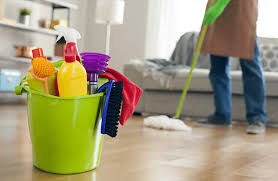

Eviniz, günün yorgunluğunu attığınız kişisel sığınağınızdır. Savar Temizlik olarak, bu özel alanı derinlemesine temizleyerek size sadece keyfini sürmek kalacak hijyenik, ferah ve sağlıklı bir ortam sunuyoruz. Profesyonel ekibimiz ve kaliteli malzemelerimizle ev temizliğini bir lüksten çok, ulaşılabilir bir standart haline getiriyoruz.
Detaylı Ev Temizliği Neden Gereklidir?
Günlük temizlik, yüzeydeki kirleri alsa da zamanla biriken ve gözden kaçan alerjenler, bakteriler ve inatçı lekeler için profesyonel bir dokunuş gerekir. Detaylı ev temizliği, hem evinizin ömrünü uzatır hem de ailenizin sağlığını korur. Yoğun temponuzda size zaman kazandırır ve yaşam kalitenizi artırır.
Ev Temizliği Sürecimiz Nasıl İşler?
Sürecimiz, ihtiyaçlarınızı dinleyerek başlar. Belirlenen gün ve saatte adresinize ulaşan ekibimiz, önceden hazırlanan kontrol listesine göre çalışır. "Yukarıdan aşağıya, temizden kirliye" prensibiyle, tozun tekrar yayılması engellenir. Her oda için özel ekipmanlar kullanarak hijyen standartlarından ödün vermeyiz.
Ev & Daire Temizliği Neleri Kapsar?
- Tüm odaların ve salonun süpürülüp silinmesi, toz alınması
- Mutfak dolaplarının dıştan silinmesi, tezgah ve eviyenin ovulması
- Banyo ve tuvaletlerin dezenfekte edilmesi, duşakabin ve fayansların parlatılması
- İç ve dış camların, pencere pervazlarının temizlenmesi
- Kapıların, prizlerin ve peteklerin silinmesi
- Balkonların yıkanması veya silinmesi
Hangi Ekipmanları Kullanıyoruz?
- Yüksek emiş gücüne sahip profesyonel vakum makineleri
- Zemin türüne özel (parke, mermer, fayans) temizlik ürünleri
- İz bırakmayan mikrofiber bezler ve cam-silme aparatları
- Banyo ve mutfak için insan sağlığına zararsız, güçlü dezenfektanlar
- Talep üzerine buharlı temizlik makineleri
Ev Temizliği Fiyatları
Ev temizliği fiyatları; dairenizin oda sayısı (2+1, 3+1 vb.), metrekare büyüklüğü, eşyalı veya boş olması ve talep edilen ek hizmetlere (fırın içi, dolap içi temizliği vb.) göre belirlenir. En doğru fiyat teklifi için bizimle iletişime geçerek ücretsiz keşif talep edebilirsiniz.